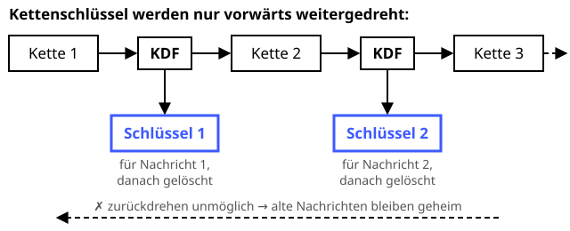

Ende-zu-Ende-Messenger (Signal-Protokoll)
Schutzziele: Authentizität Vertraulichkeit Integrität
Jede Nachricht bekommt ihren eigenen Schlüssel – frisch gerieben.
Definition
Das Signal-Protokoll (genutzt von Signal, WhatsApp und anderen) verschlüsselt Nachrichten so, dass nur die Endgeräte sie lesen können – nicht einmal der Server des Anbieters. Mit dem Double-Ratchet-Verfahren wird für jede Nachricht ein neuer Schlüssel abgeleitet. Wird ein Schlüssel gestohlen, bleiben frühere Nachrichten trotzdem geheim (Forward Secrecy).
Zutaten
- Identitäts-Schlüsselpaare der Geräte
- X3DH bzw. PQXDH (mehrfacher Diffie-Hellman)
- Double Ratchet: DH-Ratsche und Ketten aus HMAC
- Authentisierte Verschlüsselung
- Sicherheitsnummer zum Vergleichen
Zubereitung
- Jedes Gerät lädt öffentliche Schlüssel auf den Server: Identitätsschlüssel, signierter Prekey und Einmal-Prekeys.
- Der Absender holt das Schlüsselbündel des Empfängers und berechnet per mehrfachem Diffie-Hellman ein gemeinsames Geheimnis – auch wenn der Empfänger gerade offline ist.
- Daraus startet die Double Ratchet: Für jede Nachricht wird über eine Kette aus HMACs ein neuer Nachrichtenschlüssel abgeleitet.
- Bei jeder Antwort kommt ein neuer Diffie-Hellman-Schritt dazu – so heilt sich die Verbindung sogar nach einem Schlüsseldiebstahl.
- Jede Nachricht wird mit ihrem Schlüssel authentisiert verschlüsselt, der Schlüssel danach gelöscht.
- Die Nutzer vergleichen einmal ihre Sicherheitsnummer (QR-Code scannen) und schließen so einen Man-in-the-Middle aus.
Skizze

Jede Nachricht bekommt ihren eigenen Schlüssel (blau). Wer später eine Kette stiehlt, kann alte Nachrichtenschlüssel nicht zurückrechnen.
Skizze erstellt von Claude (KI)
Demo
Platzhalter für die Demo
Tipps
- Bei wichtigen Kontakten die Sicherheitsnummer verifizieren – sonst merkt man einen Man-in-the-Middle nicht.
- Metadaten (wer schreibt wann mit wem) schützt Ende-zu-Ende-Verschlüsselung nicht automatisch.
- Ein unverschlüsseltes Chat-Backup in der Cloud hebelt die ganze Verschlüsselung aus.
- Signal setzt mit PQXDH bereits ein Post-Quanten-Verfahren ein.